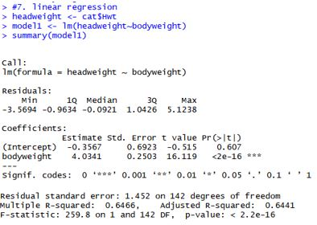
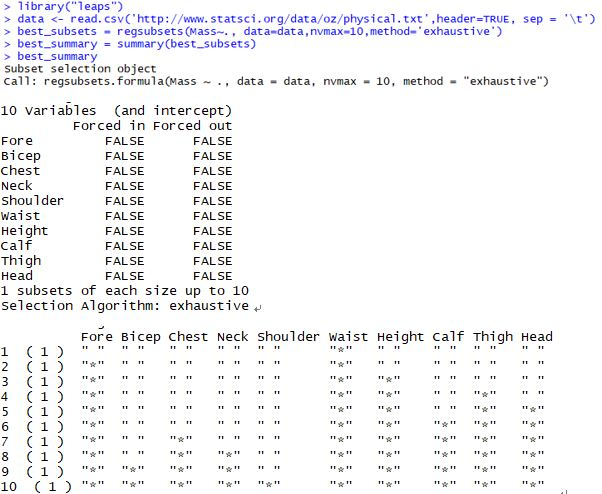

| Linear Regression |
 |
Figure out the relationship between variables. One variable becomes dependent variable and the others will be independent variables. |
| Subset Selection |
 |
Select independent variables for regression from multiple variables to get best result. |
| Other Concepts |
- Cross Validation: Divide data into training dataset and validating dataset. Find a relationship based on training set and validate it comparing with the result of validating set.
- Logistics Regression: Linear regression whose dependent variable is bionominal. The value of dependent variable is logistics of the probability.
|